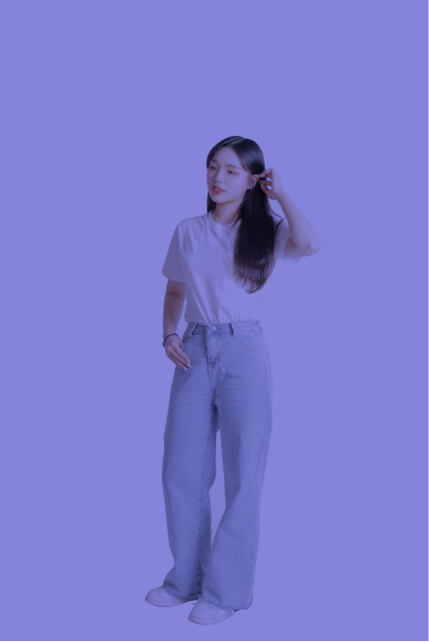

intro.
Visual.
Project.
UIUX.
WepP.
greetings
ability

노력하는
디자이너
조은수
타이포그래피, 형태와 이미지를 활용하며
공부했으며, 웹사이트 디자인을 통해 결과
물을 도출하였습니다
실제 공모전 제출을 목표로 제작하고자 하는
앱을 디자인하며, 앱을 홍보하는 웹사이트와
영상을 제작하는 팀 작업을 진행하였습니다
앱과 웹에 대한 기본적인 사항을 다듬으며
아이콘, 위젯 등을 제작하며 UIUX 작업을
정의하였습니다
웹을 직접 구현해보며 다양한 코드를 학습
하고, 활용을 통해 나만의 포트폴리오 사이
트를 제작하였습니다